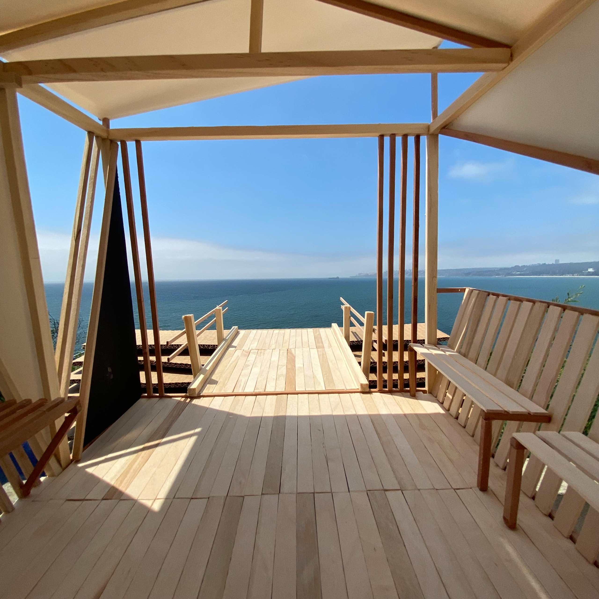

TRABAJOS
PROYECTOS

TALLER DEL HABITAR 2023 | RELIEVE
SUCESIVO EN DENSIDAD
Proyecto del segundo semestre del 2023, ciclo 2

TALLER DEL HABITAR 2023 | ESPACIO
TALLER DEL HABITAR 2023 | ESPACIO
PROYECTIVO DE QUIEBRES
Proyecto del segundo semestre del 2023, ciclo 3

TALLER TOPOLÓGICO MULTIESCALAR 2024 |
MARIQUITA
Proyecto del primer semestre del 2024, ciclo 1

TALLER TOPOLÓGICO MULTIESCALAR 2024 |
CAPUCHINA
Proyecto del primer semestre del 2024, ciclo 3

TALLER DE LA DIVERSIÓN DEL HÁBITO 2024 |
LO REDONDO QUE SE ADAPTA AL REPOSO
Proyecto del segundo semestre del 2024, ciclo 1

TALLER DE DIVERSIÓN DEL HÁBITO 2024 |
EL TRAZO QUE CONTIENE Y ENVUELVE
Proyecto del segundo semestre del 2024, ciclo 3

TALLER DE ALGORITMOS CINÉTICOS 2025 |
RECORRIDO DESCENDIENTE
Proyecto del primer semestre del 2025